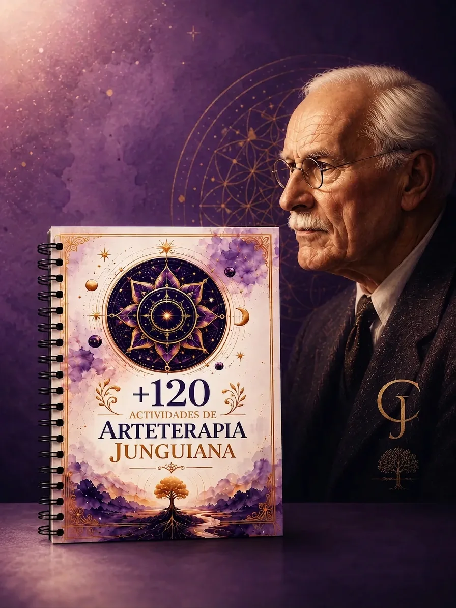
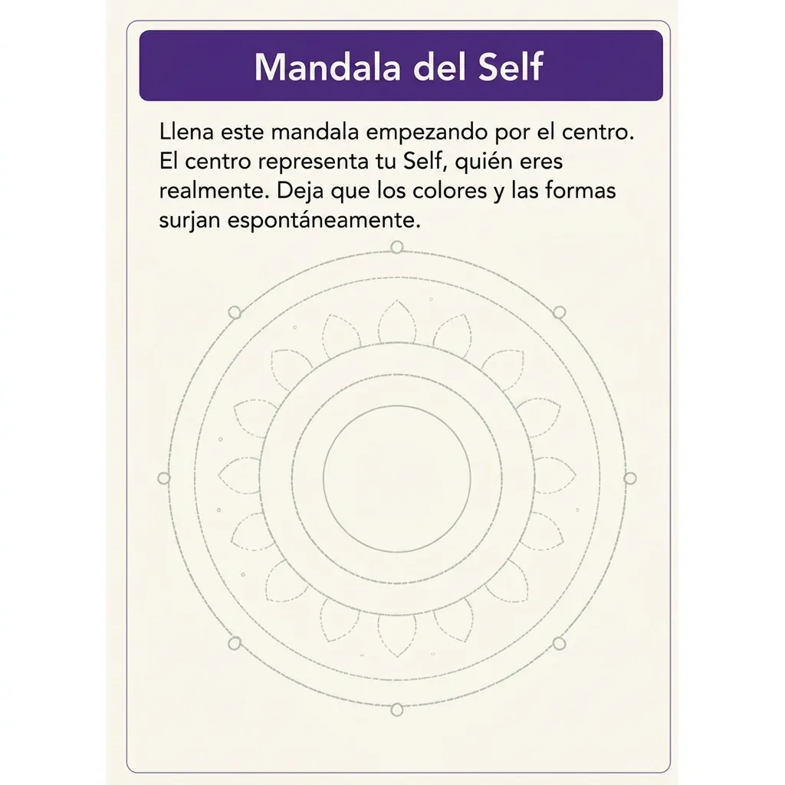
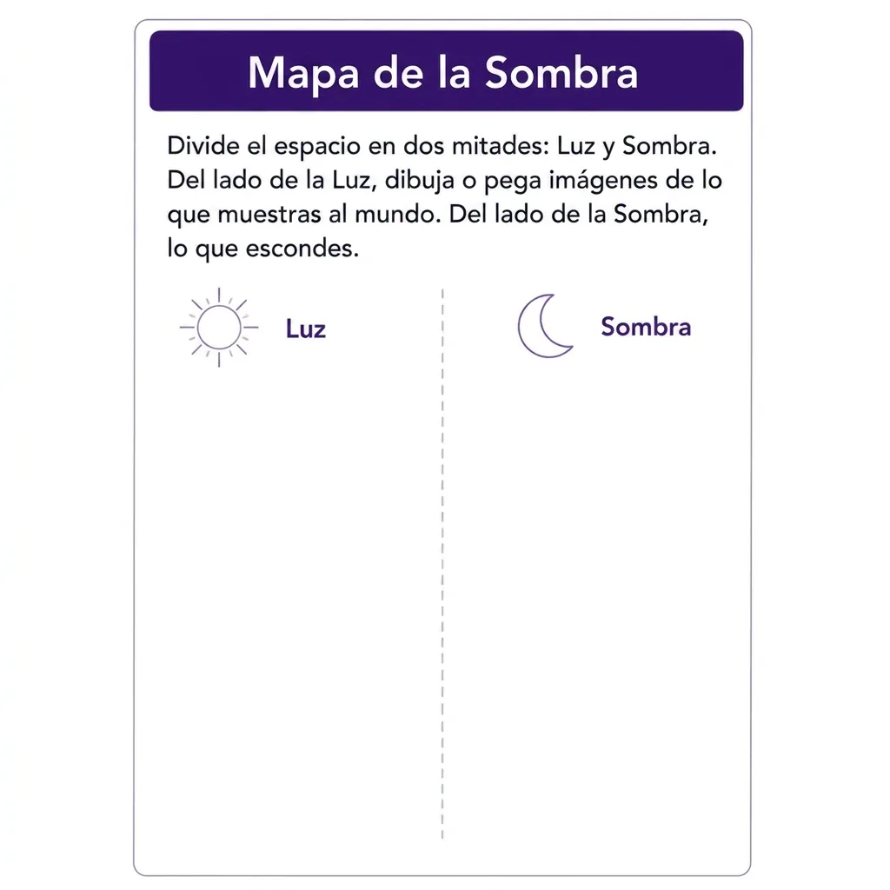
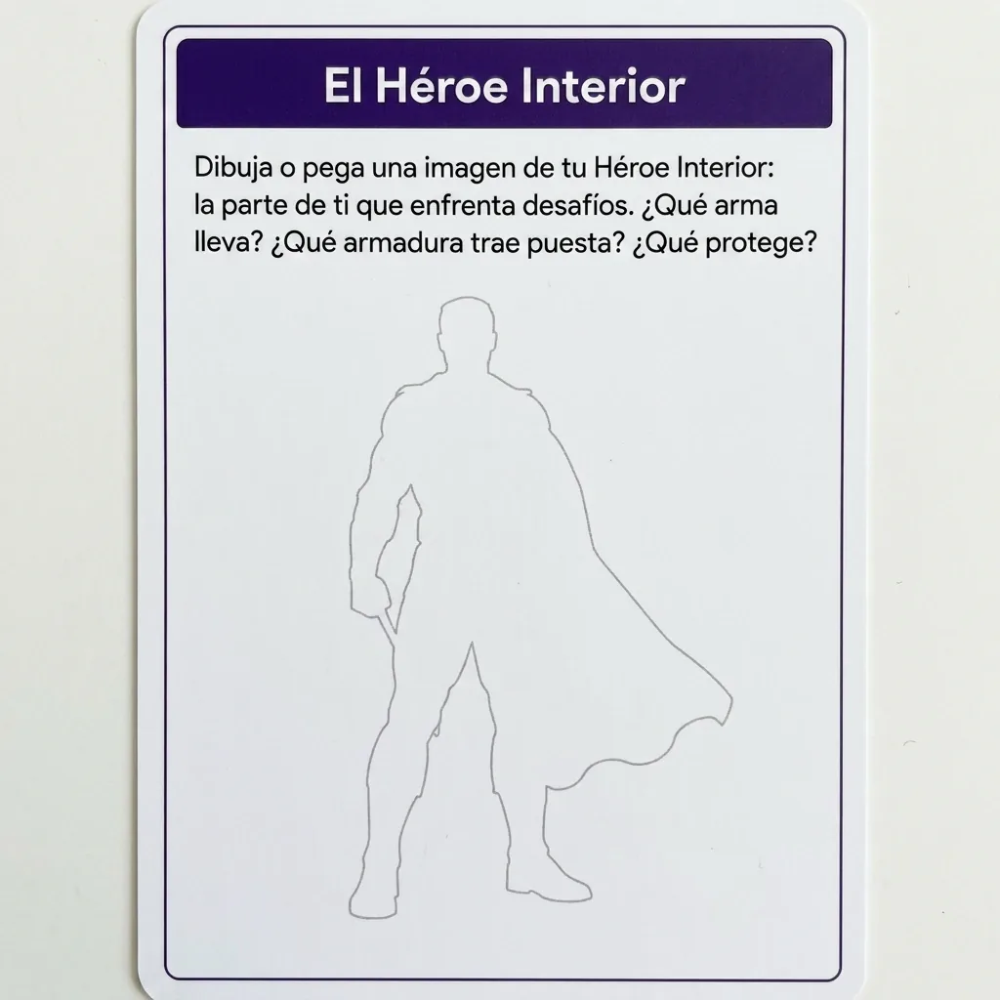
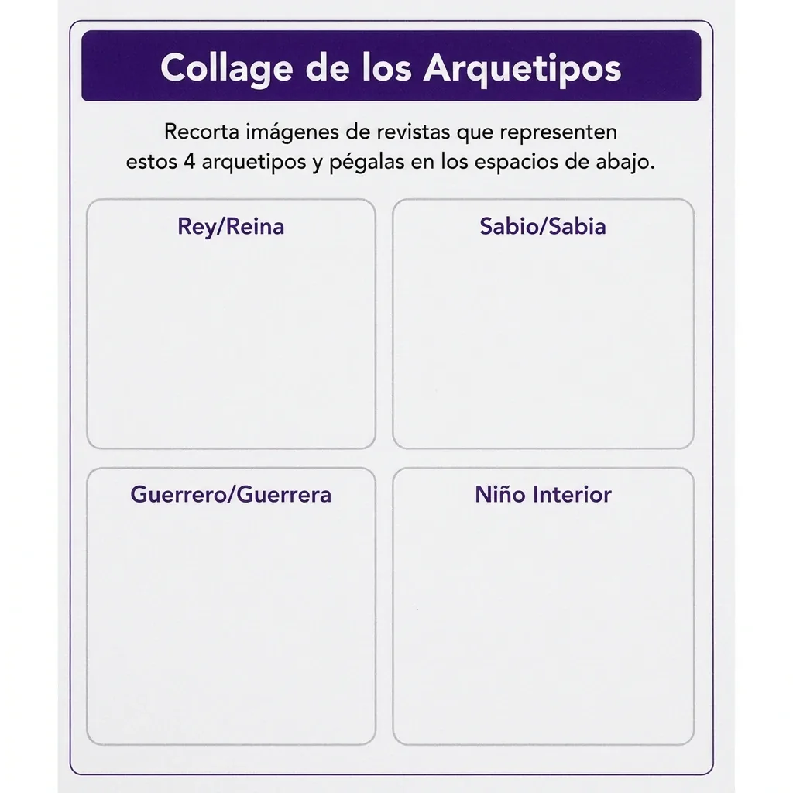
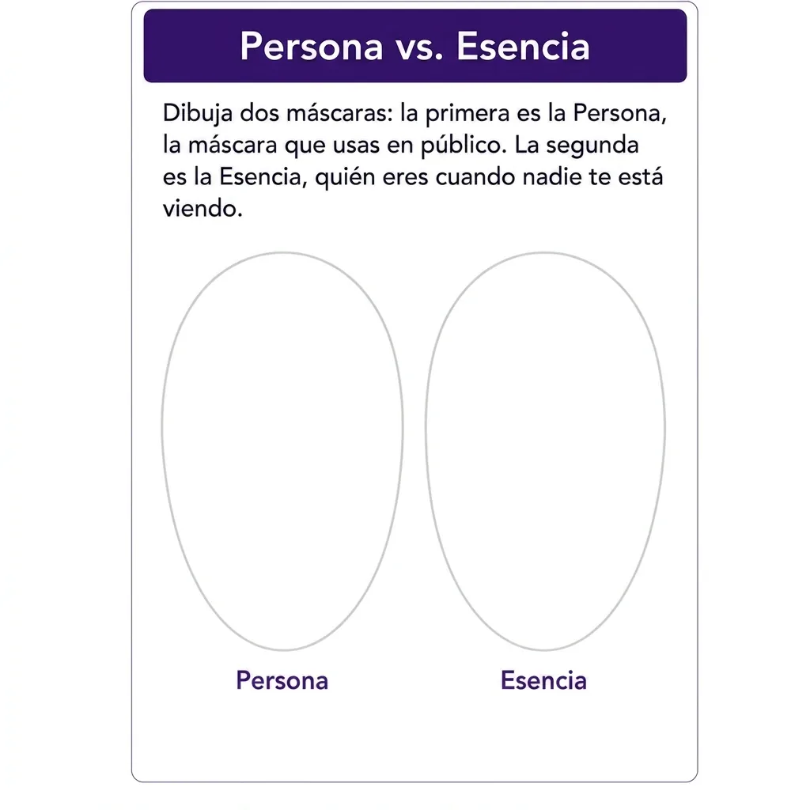
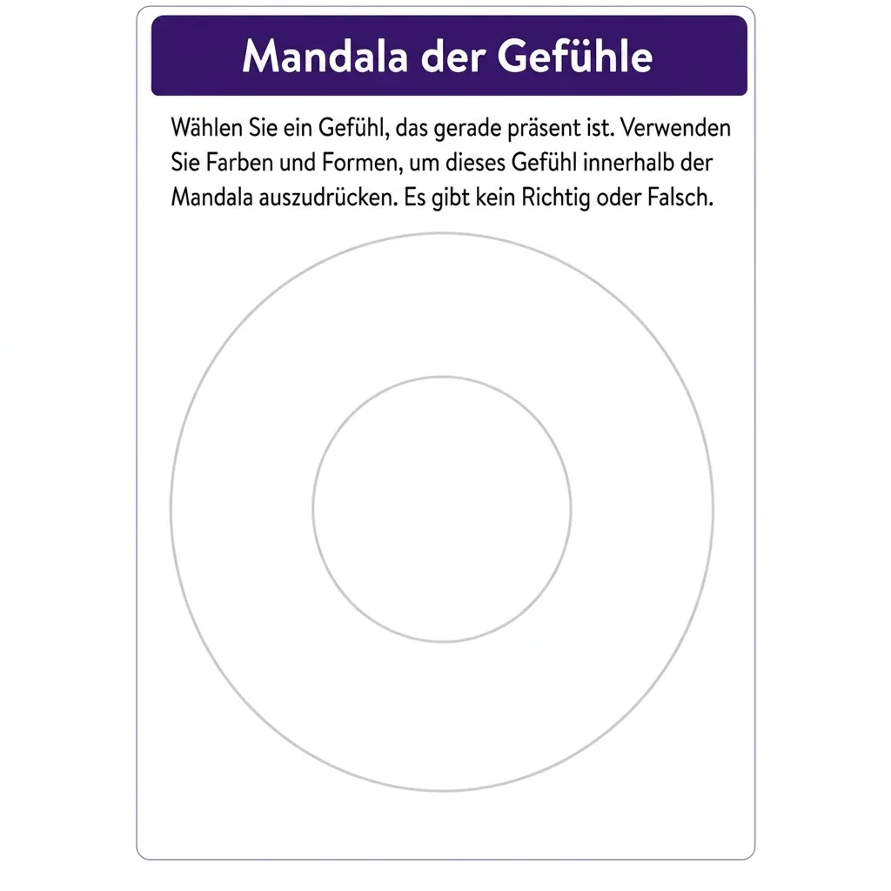
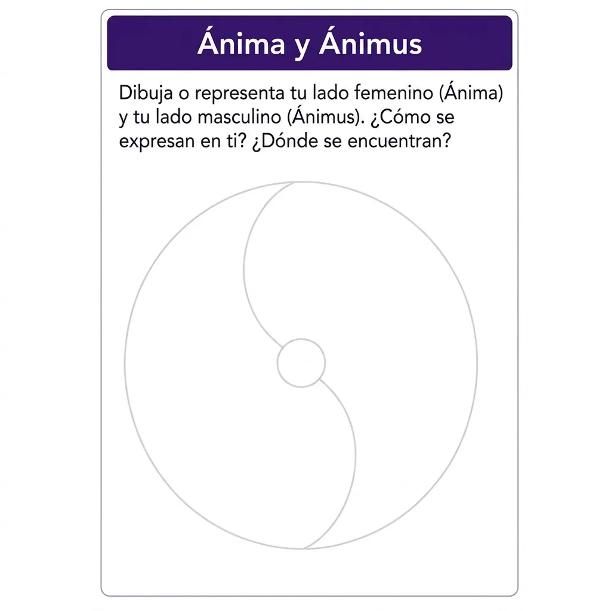
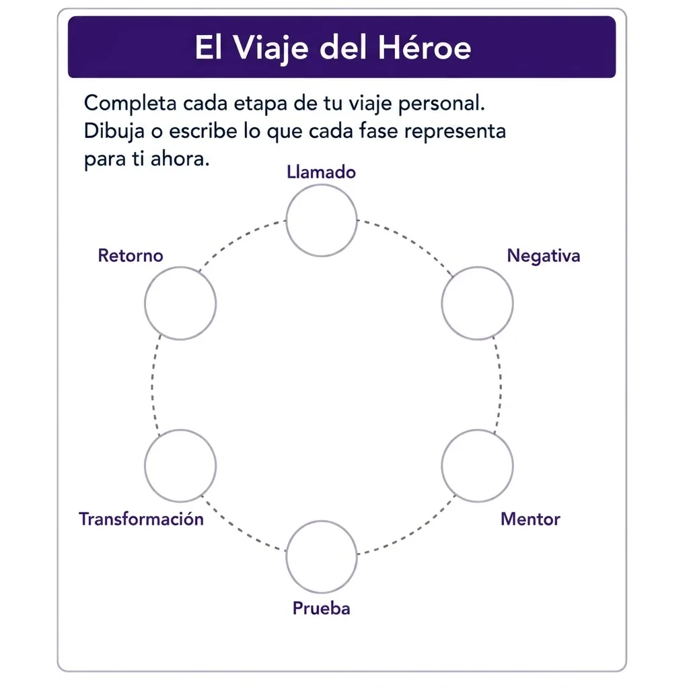
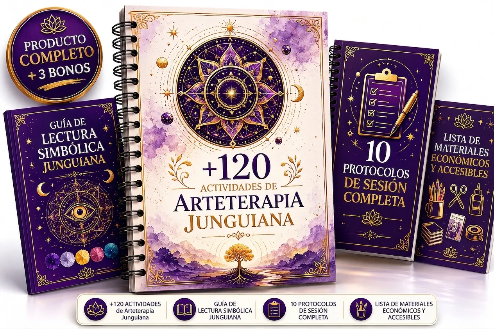

+120 Actividades de Arteterapia Junguiana Listas para Usar en Tu Próxima Sesión
La guía práctica para terapeutas, psicólogos, coaches y educadores que quieren generar insights profundos en sus consultantes y alumnos —sin posgrado y sin saber dibujar.

Mira por dentro lo que vas a recibir








Cada actividad con paso a paso claro: ábrela y aplícala en la sesión, sin preparación previa.
Organizada por objetivo: autoconocimiento, expresión emocional, integración de la sombra y trabajo con arquetipos.
Guía de lectura simbólica incluida: para que sepas qué observar y cómo devolverlo al consultante.
Funciona en cualquier contexto: consulta individual, grupo, salón de clase o práctica holística.
Lo que cambia en tu práctica desde la primera sesión
Tus consultantes se abren de verdad. La imagen accede a lo que meses de conversación no alcanzan a tocar.
+120 actividades listas para mañana, sin que tengas que inventar dinámicas a última hora.
Cada actividad trae su lectura simbólica, así nunca te quedas sin saber cómo interpretar lo que aparece.
No necesitas talento artístico —ni tú ni tu consultante. El valor está en el proceso, no en el dibujo.
Te diferencias de los demás colegas con un recurso que casi nadie está usando bien.
Se adapta a consulta, escuela, coaching y trabajo holístico sin cambiar tu enfoque.
Acceso inmediato: descárgala hoy y aplícala en tu próxima sesión.
Por qué esta guía le gana al camino largo
Esta guía es perfecta para ti que:
Eres terapeuta o psicólogo y quieres ir más allá de la conversación.
Eres educador y necesitas herramientas creativas que de verdad muevan al grupo.
Trabajas en terapia holística o coaching y quieres integrar lo junguiano con el arte.
Sientes que la arteterapia «es demasiado compleja» o que «necesitas un posgrado» para usarla.
Crees que no sabes dibujar y por eso nunca te animaste (aquí no hace falta).
Quieres un recurso también para tu propio autoconocimiento como profesional.
Conoce lo que hay dentro

+120 Actividades de Arteterapia JunguianaLa Guía Práctica Para Profesionales
Mandalas Junguianas
El corazón del proceso de individuación: actividades para trabajar el centro, el sí mismo (Self) y la integración de opuestos.
Collage Intuitivo
Con recortes de revistas, el consultante proyecta sin defensas: ideal para explorar la sombra, la persona y las proyecciones.
Dibujo de Arquetipos
Ejercicios para dar forma al ánima/ánimus, el héroe, la gran madre y el viejo sabio, y ponerlos a dialogar.
Ejercicios de Sombra
Actividades diseñadas para acercar y reintegrar la sombra a través de la imagen, con contención y respeto.
Viaje del Héroe a través del Arte
Una secuencia narrativa en imágenes para mapear el proceso de transformación del consultante.
Expresión Emocional Libre
Actividades suaves de apertura y contención, perfectas para primeras sesiones y momentos de acompañamiento.
Cada actividad incluye:
- Objetivo junguiano claro (qué mueve y para qué).
- Materiales necesarios (siempre sencillos y económicos).
- Paso a paso para aplicarla sin improvisar.
- Preguntas de reflexión y lectura simbólica para el cierre.
- Variación individual y en grupo.
Y además, 5 bonos para que apliques todo con confianza

Guía Rápida de Lectura Simbólica
Un mapa práctico para leer mandalas, colores, formas y posiciones: qué observar y cómo devolverlo sin caer en interpretaciones forzadas.
Valor: MX$190Incluido gratis

10 Protocolos de Sesión Completa
Sesiones armadas de principio a fin: encuadre → actividad → reflexión → cierre. Solo eliges el objetivo y sigues el guion.
Valor: MX$290Incluido gratis

Lista de Materiales Económicos
Todo lo que necesitas y dónde conseguirlo barato en México. Empiezas con lo que ya tienes en casa.
Valor: MX$90Incluido gratis

Banco de 50 Preguntas de Reflexión
Preguntas organizadas por arquetipo para abrir el diálogo después de cada actividad, sin quedarte en blanco.
Valor: MX$150Incluido gratis

Kit de 20 Mandalas Imprimibles
20 mandalas en alta resolución, listas para imprimir, clasificadas por nivel y por objetivo. Abres, imprimes y usas.
Valor: MX$190Incluido gratis

Quién creó esta guía
Rosana Neves
Rosana Neves es terapeuta y especialista en arteterapia de orientación junguiana. Durante años tradujo el conocimiento de la psicología analítica en algo aplicable: actividades prácticas que cualquier profesional puede usar de inmediato, incluso sin saber dibujar.
Comprendiendo que muchos profesionales desean ir más allá de la conversación tradicional pero no tienen acceso a formaciones largas y costosas, tradujo décadas de conocimiento en actividades listas para aplicar de inmediato.
Esta guía es el resultado de ese trabajo —el recurso que a ella le hubiera gustado tener cuando empezó.
Arma tu kit hoy
Todo lo que te llevas al comprar ahora
- Guía con +120 actividades de arteterapia junguianaMX$890
Mandalas, sombra, arquetipos, individuación y mucho más —listas para aplicar en tu próxima sesión, sin saber dibujar.
- Bono 1: Guía Rápida de Lectura SimbólicaMX$190
El mapa para interpretar colores, formas y posiciones y leer las producciones de tus consultantes con seguridad.
- Bono 2: 10 Protocolos de Sesión CompletaMX$290
Guiones paso a paso: encuadre, conducción, cierre y devolución, para aplicar sin improvisar.
- Bono 3: Lista de Materiales EconómicosMX$90
Materiales accesibles y dónde conseguirlos barato, para armar tu kit sin gastar de más.
- Bono 4: Banco de 50 Preguntas de ReflexiónMX$150
50 preguntas organizadas por arquetipo para usar después de cada actividad.
- Bono 5: Kit de 20 Mandalas ImprimiblesMX$190
20 mandalas junguianas listas para imprimir y usar con tus consultantes o alumnos, clasificadas por nivel y objetivo.
- Acceso de por vida + actualizaciones gratisMX$290
Recibe todas las próximas versiones y nuevas actividades sin pagar nada más. Pagas una vez, usas para siempre.
- Soporte por correoMX$150
¿Dudas sobre la aplicación? Escríbeme directamente —te respondo en persona para ayudarte a llevar el material a la práctica.
- Valor total:MX$2,240
Antes MX$649
Hoy solo
MX$329
· (aprox. USD $19)
Pago único. Acceso inmediato y de por vida. Sin mensualidades.
⏳ Precio de lanzamiento solo por hoy
Estamos ajustando el valor a su precio real; si vuelves mañana, es muy probable que ya no encuentres los MX$329. Asegúralo ahora.
Pago 100% seguro con tarjeta de crédito y débito, OXXO, SPEI (transferencia) y Mercado Pago.

Riesgo cero para ti
🛡️ No tienes nada que perder
Llévala hoy, úsala en tus sesiones y compruébala en la práctica durante 30 días completos. Aplícala con tus consultantes, alumnos o en ti misma. Si por cualquier motivo sientes que no es para ti, te devuelvo el 100% de tu dinero —sin trámites, sin preguntas incómodas. Y el material que ya descargaste se queda contigo.
Ofrezco esta garantía porque confío en lo que entregué. Si eres la excepción, lo resuelvo al instante.
Cómo funciona
Haz clic y completa tu compra en menos de 2 minutos.
Recibe tu acceso al instante en tu correo, apenas confirmas el pago.
Abre, elige una actividad y aplícala en tu próxima sesión. Así de simple.
Preguntas Frecuentes
No. Ni tú ni tu consultante. En arteterapia el valor está en el proceso y en lo que aparece, nunca en la técnica ni en la «calidad» del dibujo.
No. La guía está pensada para que cualquier profesional del acompañamiento la aplique con criterio desde el primer día. Es un recurso de apoyo a tu práctica, no un requisito académico.
Sí. Muchas actividades están adaptadas para grupo y salón de clase, con variaciones listas para trabajar con alumnos.
Sí. El enfoque junguiano se integra muy bien con el trabajo holístico y de coaching, y las actividades se adaptan a sesiones individuales o grupales.
No. Casi todo lo tienes en casa o lo consigues por muy poco. Incluimos una lista de materiales económicos y dónde conseguirlos.
De forma digital e inmediata. Apenas confirmas el pago, te llega el acceso por correo. Es tuyo de por vida, con las actualizaciones incluidas.
Tienes 30 días de garantía. Si no es para ti, te devolvemos el 100% de tu dinero con un solo correo, sin trámites.
Claro. Muchos profesionales empiezan aplicándose las actividades a sí mismos —es la mejor forma de dominarlas antes de llevarlas a sesión.
+120 actividades listas para usar mañana. Sin posgrado. Sin saber dibujar.
Todo el kit + los 5 bonos, con acceso de por vida y 30 días de garantía. Pago único de MX$329 (aprox. USD $19) — acceso inmediato.